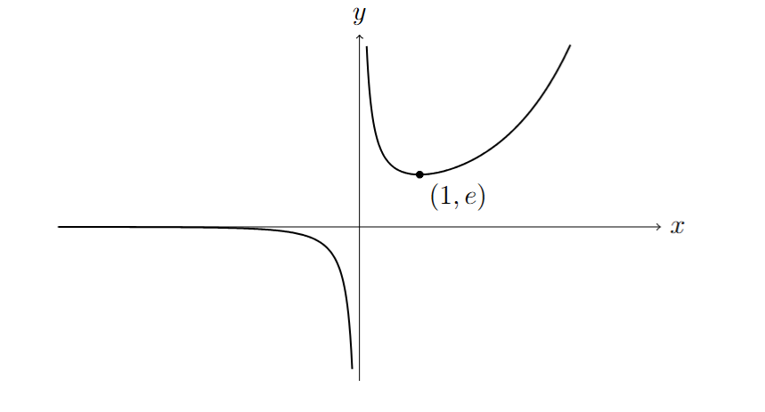

(i)
\[
\because \frac{d}{dx}\left(2x\sqrt{1+x^3}\right)
=2\sqrt{1+x^3}+2x\cdot\frac{3x^2}{2\sqrt{1+x^3}}
\]
\[
\therefore \int\left(2\sqrt{1+x^3}+\frac{3x^3}{\sqrt{1+x^3}}\right)\,dx
=2x\sqrt{1+x^3}+C
\]
(ii)
\[
(x^2+2)\frac{\sin x}{x^3}=\frac{\sin x}{x}+\frac{2\sin x}{x^3}
\]
\[
\int \frac{2\sin x}{x^3}\,dx
=-\frac{\sin x}{x^2}+\int \frac{\cos x}{x^2}\,dx
\]
\[
\int \frac{\sin x}{x}\,dx
=-\frac{\cos x}{x}-\int \frac{\cos x}{x^2}\,dx
\]
\[
\begin{aligned}
\int (x^2+2)\frac{\sin x}{x^3}\,dx
&=\int \frac{\sin x}{x}\,dx
-\frac{\sin x}{x^2}
-\frac{\cos x}{x}
-\int \frac{\sin x}{x}\,dx\\
&=-\frac{\sin x+x\cos x}{x^2}+C
\end{aligned}
\]
(iii)(a)
\[
\frac{dy}{dx}=\frac{e^x(x-1)}{x^2}
\]
\[
\frac{dy}{dx}=0\implies x=1
\]
\[
\begin{array}{c|c|c|c|c|c}
x & -\infty & 0^- & 0^+ & 1 & \infty\\
\hline
y & 0^- & -\infty & \infty & e & \infty
\end{array}
\]

(iii)(b)
\[
\int_a^{2a}\frac{e^x}{x}\,dx=\int_a^{2a}\frac{e^x}{x^2}\,dx
\]
\[
\because \frac{d}{dx}\left(\frac{e^x}{x}\right)
=\frac{e^x}{x}-\frac{e^x}{x^2}
\]
\[
\left[\frac{e^x}{x}\right]_a^{2a}=0
\]
\[
\frac{e^{2a}}{2a}-\frac{e^a}{a}=0
\]
\[
a=\ln 2
\]
(iii)(c) Assume distinct integers \(m,n\) exist and \(n<m\).
\[
\left[\frac{e^x}{x}\right]_m^n=0
\implies\frac{e^n}{n}=\frac{e^m}{m}
\]
From the graph in (iii)(a), \(\displaystyle \frac{e^n}{n}\) must lie in \((0,1)\).
\[
\therefore \text{Contradiction, no distinct integers }m,n\text{ exist}
\]